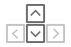

Advanced viewer parameters
Viewer parameters
Fill in the fields on the left to describe your viewer profile.
When you're done, click the "Generate profile >" button below to see the generated viewer QR profile.
Tip 1: Click on any of the fields to see the detailed help.
| Tip 2: Use the up/down keyboard arrow keys in numeric fields to increment or decrement values, and the "Tab" key to navigate between fields. |  |
Enter your company's name (up to 30 characters). This name will be shown in all apps which work with Google Cardboard after completing the viewer pairing flow.
Enter your viewer's name (up to 30 characters). Similarly to the company's name, the viewer's name will be shown in all apps which work with Google Cardboard after completing the viewer pairing flow.
Choose the type of the primary button on your device.
If your device has no inputs and the smartphone screen is not accessible, choose "NONE". Similarly, choose "NONE" if your device has a separate Bluetooth controller and no other built-in inputs.
If your device has no inputs, but the user can touch the smartphone screen with the finger without taking the phone out of the viewer, choose "TOUCH".
If your device has a mechanical input which is ultimately registered as a screen touch, but the user's finger is not touching the screen directly, choose "INDIRECT_TOUCH".
If your device has a Google Cardboard-like magnetic input, choose "MAGNET".
Measure the distance between the smartphone screen and the lenses of your viewer using a ruler or a caliper as shown in the diagram below, and enter the distance in millimeters (mm).
Note: if your viewer comes with an adjustable focal distance, measure the average distance between the screen and the lenses.
Measure the distance between the centers of your viewer's lenses using a ruler or a caliper as shown in the diagram below, and enter this distance in millimeters (mm).

Note: if your viewer comes with an adjustable IPD, measure the average distance between the lense centers.
Choose whether the smartphone screen is vertically aligned to the bottom/top of the viewer when it's inserted, or whether the smartphone is always vertically centered.
For most viewers this should be set to "BOTTOM".
Measure the vertical distance between the tray and your viewer's lens center using a ruler or a caliper as shown in the diagram below, and enter this distance in millimeters (mm).

View the lens calibration VR scene which appears on your smartphone.
Adjust the distortion coefficients so that straight lines in the virtual world still appear straight when you are looking at them through the lenses. Similarly, right (90°) angles should still appear as right angles when looking at them through the lenses.
Make sure that these conditions hold both in the center of your field-of-view and in the periphery.
Here is the current lens curvature for your distortion coefficients:
Enter the field-of-view angles for your left lens.
Warning: changing the field-of-view angles results only in a slight rendering optimization on large screen-size smartphones. For most viewers these fields be set to 50° or more.
Select this checkbox if your viewer has at least one embedded magnet. Doing so will inform all apps built using the Cardboard SDKs that the smartphone's magnetometer should not be used.
If you ever need to save or load the parameters entered in this form, simply copy and paste the URI below: